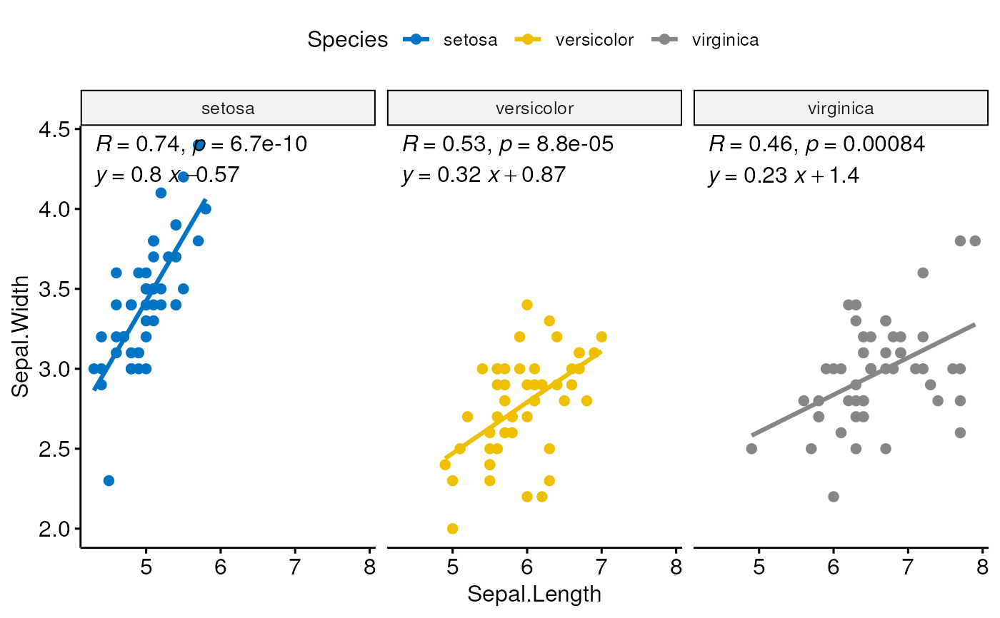
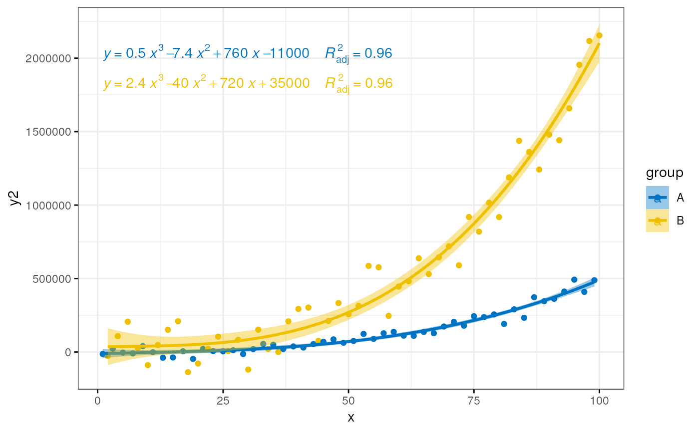

stat_regline_equation.RdAdd regression line equation and R^2 to a ggplot. Regression
model is fitted using the function lm.
stat_regline_equation(mapping = NULL, data = NULL, formula = y ~ x, label.x.npc = "left", label.y.npc = "top", label.x = NULL, label.y = NULL, output.type = "expression", geom = "text", position = "identity", na.rm = FALSE, show.legend = NA, inherit.aes = TRUE, ...)
| mapping | Set of aesthetic mappings created by |
|---|---|
| data | The data to be displayed in this layer. There are three options: If A A |
| formula | a formula object |
| label.x.npc, label.y.npc | can be
If too short they will be recycled. |
| label.x, label.y |
|
| output.type | character One of "expression", "latex" or "text". |
| geom | The geometric object to use display the data |
| position | Position adjustment, either as a string, or the result of a call to a position adjustment function. |
| na.rm | If FALSE (the default), removes missing values with a warning. If TRUE silently removes missing values. |
| show.legend | logical. Should this layer be included in the legends?
|
| inherit.aes | If |
| ... | other arguments to pass to |
x position for left edge
y position near upper edge
equation for the fitted polynomial as a character string to be parsed
\(R^2\) of the fitted model as a character string to be parsed
Adjusted \(R^2\) of the fitted model as a character string to be parsed
AIC for the fitted model.
BIC for the fitted model.
Set to zero to override the default of the "text" geom.
the source code of the function stat_regline_equation() is
inspired from the code of the function stat_poly_eq() (in ggpmisc
package).
# Simple scatter plot with correlation coefficient and # regression line #:::::::::::::::::::::::::::::::::::::::::::::::::::: ggscatter(mtcars, x = "wt", y = "mpg", add = "reg.line") + stat_cor(label.x = 3, label.y = 34) + stat_regline_equation(label.x = 3, label.y = 32)# Groupped scatter plot #:::::::::::::::::::::::::::::::::::::::::::::::::::: ggscatter( iris, x = "Sepal.Length", y = "Sepal.Width", color = "Species", palette = "jco", add = "reg.line" ) + facet_wrap(~Species) + stat_cor(label.y = 4.4) + stat_regline_equation(label.y = 4.2)# Polynomial equation #:::::::::::::::::::::::::::::::::::::::::::::::::::: # Demo data set.seed(4321) x <- 1:100 y <- (x + x^2 + x^3) + rnorm(length(x), mean = 0, sd = mean(x^3) / 4) my.data <- data.frame(x, y, group = c("A", "B"), y2 = y * c(0.5,2), block = c("a", "a", "b", "b")) # Fit polynomial regression line and add labels formula <- y ~ poly(x, 3, raw = TRUE) p <- ggplot(my.data, aes(x, y2, color = group)) + geom_point() + stat_smooth(aes(fill = group, color = group), method = "lm", formula = formula) + stat_regline_equation( aes(label = paste(..eq.label.., ..adj.rr.label.., sep = "~~~~")), formula = formula ) + theme_bw() ggpar(p, palette = "jco")